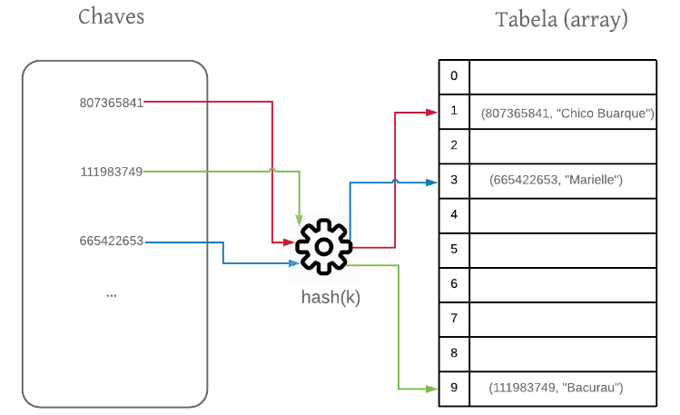
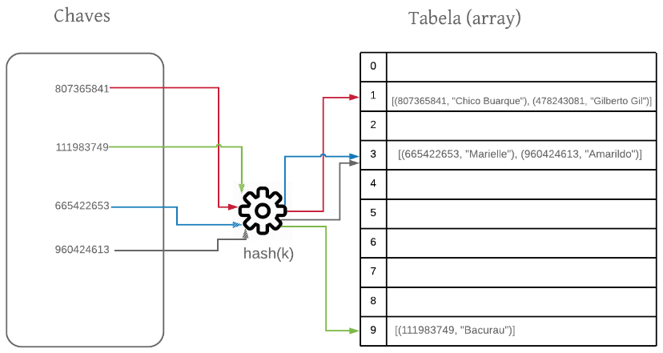
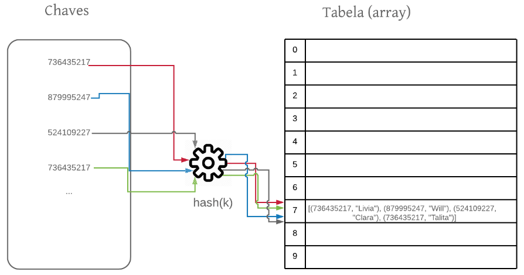
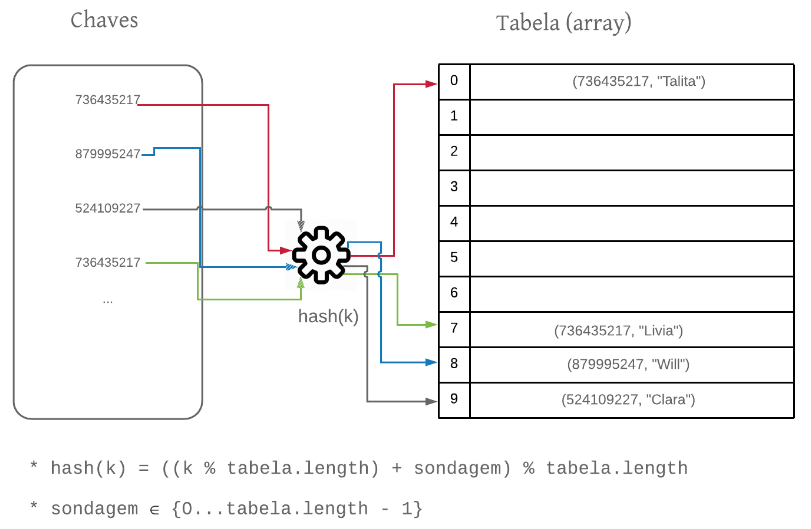

Tabelas Hash
Quando tratamos de estrutura de dados estamos sempre interessados na eficiência de operações fundamentais de coleções, como busca, inserção e remoção. Nesse sentido, o array, embora seja uma estrutura elementar, é um excelente escolha para diversos cenários, pois nos fornece acesso, inserção e remoção em tempo $O(1)$. Isto é, se soubermos o índice em que um elemento está, o tempo de acesso a esse elemento é extremamente eficiente. O mesmo ocorre para adicionar um elemento em uma posição arbitrária, pois o custo dessa operação é dado pela operação primitiva de atribuição (ex: array[4] = "computacao@ufcg"). Por fim, a remoção pode também ser efetuada em $O(1)$ atribuindo o valor da posição para null (ex: array[8] = null).
Vamos analisar o cenário em que desejamos armazenar objetos do tipo Aluno que representam os alunos de Computação @ UFCG. Para fins de simplificação, o objeto do tipo aluno possui dois atributos: matrícula e nome.
public class Aluno {
private int matricula;
private String nome;
public int getMatricula() {
return this.matricula;
}
public String getNome() {
return this.nome;
}
...
}
Vamos também assumir que a matrícula identifica unicamente um aluno do curso e que é um inteiro no domínio [0…1999]1. Nesse material chamamos de chaves os atributos dessa natureza. Dentro desse cenário, um array é uma estrutura muito adequada, porque podemos armazenar o aluno na posição do array cujo valor é o mesmo de sua matrícula. Não somente a inserção, mas a busca e a remoção desse objeto pode ser realizada em tempo $O(1)$, pois há uma correspondência direta entre o identificador único do aluno (a chave) e o índice em que ele se encontra no array. Veja:
...
public static void main(String[] args) {
Aluno[] alunos = new Aluno[2000];
Aluno joao = new Aluno(21, "João Arthur");
// inserindo em tempo constante
alunos[joao.getMatricula()] = joao;
// buscando em tempo constante
if (alunos[joao.getMatricula()] != null)
...
// removendo em tempo constante
alunos[joao.getMatricula()] = null
}
...
Note que, como há uma correspondência direta entre a matrícula e o índice em que o elemento está, as operações são muito eficientes.
Chamamos de Tabela de Acesso Direto o array que é usado dessa maneira, isto é, com os valores sendo mapeados de forma direta para os índices do array. Foi assim que usamos o array para ordenar em tempo linear com o Counting Sort, lembra?
Os Problemas
Vamos tentar ser um pouco mais realistas no nosso exemplo. Todos sabemos que as matrículas em Computação @ UFCG não variam de 0 a 1999, certo? Nossas matrículas são números inteiros de 9 dígitos (ex: 203198353). Portanto, teoricamente, [000000000, 999999999] é o intervalo de matrículas válidas em Computação @ UFCG. Normalmente, em outros domínios isso também é verdade. Os elementos que nos identificam unicamente são tipicamente números com vários dígitos, por exemplo, CPF, cartão de crédito, identidade etc. Assim, se quiséssemos armazenar os alunos utilizando a matrícula como índices teríamos que criar um array com $10^9$ posições.
Mesmo isso sendo possível, uma grande parte desse array não seria utilizada, pois o padrão usado para criar as matrículas baseia-se no ano, período de entrada e posição de entrada no vestibular e, por isso, exclui uma grande quantidade de números no intervalo [000000000, 999999999]. Além disso, ao longo de toda a história, Computação @ UFCG teve aproximadamente 2000 matrículas, o que significa que o número de matrículas efetivamente usadas é bem menor do que o número de matrículas possíveis. Isto é, teríamos que criar um array de $10^9$ posições para usar aproximadamente apenas os primeiros 2000 índices.
Importante destacar também que para outros cenários, como por exemplo o CPF que possui 11 dígitos, não somente o desperdício de memória é um problema, mas não há como criar arrays de $10^{11}$ posições em várias linguagens de programação.
Em resumo, é inviável utilizar mapeamento direto (tabela de acesso direto) para chaves cujo valor é muito alto. Além disso, não é eficiente do ponto de vista de memória utilizar mapeamento direto em domínios cujo conjunto de chaves efetivamente utilizado é bem menor do que o conjunto de chaves possível.
Por último, mas não menos importante, nem sempre a chave é representada como um inteiro. Por exemplo, para fins de identificação, a Polícia Federal utiliza uma chave com 3 caracteres e 5 números inteiros (ex: CVP3018). Não é difícil notar que não há índice CVP3018 em um array, certo?
A Solução: Tabela Hash
Vamos deixar claro: queremos mapear valores inteiros grandes (ex: 87562874658) para índices de um array. Veja a figura abaixo:

Para isso, vamos utilizar uma função matemática. A ideia é criar essa função de mapeamento (hash(chave)) entre o valor da chave e um inteiro (hash) que seja um índice válido no array. A essa função damos o nome de função hash. Usando essa função conseguimos mapear as chaves para os índices do array e conseguimos então armazenar nossos objetos. Os objetos, nesse caso, são chamados de valores. Assim, na tabela armazenamos os pares <chave, valor>. Como a chave é tipicamente um atributo do objeto, essa redundância é bem comum. Isto é, armazenamos a chave e o objeto, que por sua vez contém a chave.
Note que a função de hash precisa ter algumas características bem importantes:
-
A função hash(chave) deve ser determinística. Para uma determinada chave a função sempre retorna o mesmo valor dehash.
-
Por ser utilizada como uma função de indexação, a função de hash deve sempre retornar um valor de hash dentro dos limites da tabela $[0, N-1]$, onde $N$ é o tamanho da tabela.
-
Uniforme. Todos os índices do array devem ter aproximadamente a mesma chance de serem mapeados pela função dehash. Essa característica é importante para distribuir os elementos uniformemente pela tabela.
-
A função de hash deve ser executada em tempo constante $O(1)$.
Como?
A gente já fez isso nesse documento. Conceitualmente, na tabela de acesso direto apresentada na contextualização temos a seguinte função de hash:
...
private int hash(int chave) {
return chave;
}
...
Ou seja, o hash de uma chave é o valor dela própria. Essa é uma função de hash bem simples, mas adequada para diversos contextos. Contudo, isso nos causou problemas para para grandes valores chave e para cenários em que o número de chaves efetivamente usado for bem menor que o número de chaves possível, lembra?
Uma alternativa para uma função de hash seria utilizar a operação matemática módulo. Vejamos:
...
private int hash(int chave) {
return chave % tabela.length;
}
...
Veja que essa é a solução que foi utilizada na Figura acima. Pois, $807365841 % 10 = 1$, $111983749 % 10 = 9$ e $665422653 % 10 = 3$.
Por que módulo? Primeiro porque sempre vai gerar um inteiro dentro do intervalo de índices válidos do array. Segundo porque para uma mesma chave, a função sempre retorna o mesmo hash.
Note que, se a função de hash for executada em tempo constante, o que é o caso da função $chave % tabela.length$, temos que as funções básicas da tabela hash são, em princípio, também executadas em tempo constante.
Vamos analisar o código abaixo que apresenta algumas operações básicas da classe TabelaHash. Por motivos de simplificação, a classe que usaremos aqui implementa uma tabela hash para manipular objetos do tipo Aluno. Naturalmente, por ser de propósito geral, as implementações de Java de uma Tabela Hash (HashMap e HashTable) permitem o armazenamento e manipulação de qualquer objeto.
public class HashTable {
private Aluno[] tabela;
public HashTable() {
this.tabela = new Aluno[20];
}
private int hash(int chave) {
return chave % this.tabela.length;
}
public Aluno get(int chave) {
int hash = hash(chave);
return this.tabela[hash];
}
public void put(int chave, Aluno valor) {
int hash = hash(chave);
this.tabela[hash] = valor;
}
public Aluno remove(int chave) {
int hash = hash(chave);
Aluno aluno = this.tabela[hash];
this.tabela[hash(chave)] = null;
return aluno;
}
}
Parece tudo resolvido, não é? Mas…
Por exemplo, vimos que o objeto $(807365841, “Chico Buarque”)$ foi mapeado para o índice 1 da tabela porque $807365841 % 10$ é igual a 1. Suponha que agora temos que armazenar o objeto $(478243081, “Gilberto Gil”)$. Teremos um problema aqui, pois o hash desse objeto também tem valor 1, cujo índice já está ocupado. Na verdade, toda chave que terminar com o dígito 1 será mapeada para a posição 1 na tabela. Esse problema se chama colisão. Quando estamos diante desse problema, temos três caminhos a seguir:
-
Aplicar a técnica do avestruz, isto é, enfiar a cabeça na terra e fingir que o problema não existe;
-
Melhorar nossa função de hash para que a mesma não mapeie diferentes chaves para a mesma posição;
-
Lidar com a colisão.
O caminho de número 1 está fora de cogitação porque não queremos que uma estrutura de dados sobrescreva inadvertidamente um elemento que colocamos nela anteriormente.
O caminho número 2 é válido e discutiremos mais adiante algumas decisões de projeto de funções de hash que reduzem o número de colisões. Contudo, a menos que a função seja perfeita, o que é muito raro, veremos também que, mesmo tomando essas decisões, colisões são inevitáveis.
Então, nos sobra, por enquanto, o caminho 3. Vamos assumir como verdade que, mesmo se a função de hash for muito boa, é impossível evitar colisões. Portanto, haverá colisões e teremos que tratá-las de forma eficiente.
Resolução de Colisões
Há duas grandes estratégias lidar com esse problema: resolução de colisões por encadeamento e resolução de colisões por endereçamento aberto.
Resolução de colisões por encadeamento.
Por trás desse nome complicado há uma ideia bem simples. Ao invés de armazenarmos um objeto em uma posição da tabela, passamos a armazenar uma lista de objetos. Essa lista será composta de todos os objetos cujos hashes são iguais. Veja na figura abaixo:

Os objetos de mesmo hash foram encadeados em uma lista. Esse foi o caso de $(807365841, “Chico Buarque”)$ e $(478243081, “Gilberto Gil”)$, que estão em uma lista no índice 1 da tabela, pois os hashes de suas respectivas chaves são o mesmo: 1. O mesmo acontece com $(665422653, “Marielle”)$ e $(960424613, “Amarildo”)$, que foram encadeados em uma lista no índice 3.
Importante aqui destacar que esses objetos não possuem a mesma chave, mas sim o mesmo hash. Não há elementos com a mesma chave em uma tabela hash. Eu vou repetir em destaque porque esse é um erro recorrente:
Se for realizada a tentativa de adição de um elemento cuja chave já está presente na tabela, o valor (objeto armazenado) deve ser atualizado. Também é importante destacar que devemos guardar a chave junto com o objeto na lista, pois só assim saberemos diferenciar os objetos de mesmo hash.
Uma vez que estamos utilizando listas na tabela, o código das operações básicas deve ser modificado, concorda? Vamos primeiro analisar o método get.
...
public Aluno get(int chave) {
int hash = hash(chave);
ArrayList<Aluno> alunos = this.tabela[hash];
if (alunos == null)
return null;
for (Aluno aluno : alunos) {
if (aluno.matricula == chave)
return aluno;
}
return null;
}
...
Na segunda linha do método recuperamos a lista alunos presente no índice hash(chave). Se essa lista for null, significa que não há elemento naquela posição da tabela e, por isso, retornamos null (linhas 3 e 4).
Se a lista não for null, precisamos iterar sobre a mesma comparando as chaves (matrículas). Caso haja um objeto aluno com uma matrícula igual a passada como parâmetro, retornamos esse objeto.
Se ao fim da iteração não encontrarmos nenhum objeto na lista cuja matrícula seja igual a chave passada como parâmetro, retornamos null.
Vamos agora analisar o método put.
...
public void put(int chave, Aluno valor) {
int hash = hash(chave);
ArrayList<Aluno> alunos = this.tabela[hash];
if (alunos == null) {
alunos = new ArrayList<Aluno>();
alunos.add(valor);
this.tabela[hash] = alunos;
} else {
for (int i = 0; i < alunos.size(); i++) {
if (alunos.get(i).getMatricula() == chave) {
alunos.set(i, valor);
return;
}
}
alunos.add(valor);
}
}
No início, recuperamos a lista que está no índice hash(chave). Se não existir uma lista nesse índice (alunos == null):
- criamos essa lista;
- adicionamos o valor nela;
- adicionamos a lista na tabela.
Se existir uma lista nesse índice:
- iteramos sobre a lista para ver se há na mesma um elemento com a mesma chave;
- se houver, atualiza-se o valor (
alunos.set(i, valor)); - se não houver, adiciona-se o novo elemento no final da lista.
- se houver, atualiza-se o valor (
Por fim, vamos analisar o método remove.
public Aluno remove(int chave) {
int hash = hash(chave);
ArrayList<Aluno> alunos = this.tabela[hash];
Iterator<Aluno> it = alunos.iterator();
Aluno atual = null;
while (it.hasNext()) {
atual = it.next();
if (atual.getMatricula() == chave) {
it.remove();
return atual;
}
}
return atual;
}
A ideia consiste em: i) recuperar a lista presente no índice hash(chave) que, a princípio, contém o elemento a ser removido e ii) iterar sobre a lista comparando a chave dos elementos (matrícula) com a chave passada como parâmetro. Caso o elemento seja encontrado, o removemos da lista.
Discussão sobre o tempo de execução
Como foi possível perceber, a implementação dessas operações básicas inclui agora a iteração sobre as listas presentes na tabela. Isso significa que haverá um impacto na eficiência desses algoritmos, concorda? Na tabela de acesso direto as operações eram executadas em tempo constante $O(1)$. Contudo, como as listas podem crescer substancialmente e os algoritmos envolvem iteração sobre as mesmas, não temos mais esse cenário. Para exemplificar, vamos pensar no pior caso possível. Suponha que queremos adicionar os seguintes alunos na tabela:
- (736435217, “Lívia”)
- (879995247, “Will”)
- (524109227, “Clara”)
- (736435217, “Talita”)
Nesse caso, como nossa função de hash mapeia todos os elementos para o índice 7, teríamos a seguinte configuração:

Note que a busca por um elemento presente na tabela não seria mais realizada em tempo constante, pois envolve a iteração na lista que contém todos os elementos. Portanto, no pior caso, as operações teriam custo de execução $O(n)$, o que queremos evitar ao máximo.
Naturalmente, não queremos que o pior caso seja frequente e, por isso, escolhemos funções de hash que “espalham” os elementos pela tabela para que as listas não possuam muitos elementos. Portanto, o desempenho médio das operações na tabela hash depende do tamanho médio das listas armazenadas. Lembra da propriedade de uma função de hash que estabelece que todos os índices do array devem ter aproximadamente a mesma chance de serem mapeados pela função de hash. Essa característica é importante para distribuir os elementos uniformemente pela tabela e faz com que as listas tenham tamanho médio semelhante. Então, para uma tabela de tamanho $m$ que armazena nelementos, esperamos que o tamanho médio das listas seja $\alpha = n/m$. A esta medida damos o nome de fator de carga.
A análise depende então do tempo de execução da função de hash e do tamanho médio das listas. Como vimos, escolhemos funções de hash que executam em $O(1)$.Então, o tempo de execução das operações básicas pode ser dado por:
$T(n) = 1 + \alpha$, onde $\alpha$ é o tamanho médio das listas armazenadas na tabela.
Resolução de colisões por endereçamento aberto.
Essa estratégia não utiliza listas para lidar com colisões. A ideia é procurar um outro índice livre da tabela para armazenar o elemento quando houver colisão. Há diversas estratégias para procurar esse índice. Vamos apresentar a mais simples delas: procurar o próximo. Veja a implementação do método put(chave, Aluno) quando adotamos essa estratégia:
public void put(int chave, Aluno valor) {
int sondagem = 0;
int hash;
while (sondagem < tabela.length) {
hash = (hash(chave) + sondagem) % tabela.length;
if (tabela[hash] == null ||
tabela[hash].getMatricula() == chave ||
tabela[hash].equals(APAGADO)) {
tabela[hash] = valor;
return;
}
sondagem += 1;
}
throw new TabelaCheiaException();
}
O importante aqui é entender o uso da variável sondagem. Ela inicia com valor zero e é utilizada como fator para calcular o hash. Caso haja colisão, essa variável é incrementada e a próxima posição na tabela será analisada. Isso é feito até que uma das condições abaixo seja satisfeita:
-
encontrar um índice livre. Um índice está livre quando seu conteúdo é null ou quando seu conteúdo é um objeto APAGADO (explicação mais adiante);
-
encontrar um valor cuja chave é igual a passada como parâmetro. Nesse caso, atualiza-se o valor;
-
não encontrar posição livre na tabela (
sondagem == tabela.length - 1).
Note que não há listas e, portanto, nenhum elemento é armazenado fora da tabela. Isso significa que o fator de carga ($\alpha$) nunca pode ser maior do que 1. Por isso lançamos a exceção ao final da execução do método caso não haja posição livre na tabela. Tomamos essa decisão para fins didáticos. Na prática, quando a tabela atinge um certo nível de ocupação, executamos o método resize, isto é, cria-se uma outra tabela maior e transfere-se os elementos da tabela anterior para a nova aplicando a nova função de hash (ver resize e rehash).
Para entender bem a ideia de sondagem, vamos analisar a adição dos seguintes objetos na tabela:
- (736435217, “Lívia”)
- (879995247, “Will”)
- (524109227, “Clara”)
- (996411117, “Talita”)

Na primeira adição, o objeto $(736435217, “Lívia”)$ ocupa a posição 7 na tabela, pois esse índice é calculado da seguinte maneira:
Ou seja, o hash assume valor 7. Explicando: como o valor inicial da sondagem é zero, temos que $7 + 0 = 7$. Calculamos então o resto da divisão desse valor pelo tamanho da tabela $7 % 10 = 7$. Portanto, o índice avaliado é o índice 7. Por não haver nenhum elemento nesse índice, o objeto é adicionado.
Na segunda adição, isto é, na adição do objeto $(879995247, “Will”)$, o objeto ocupará a posição 8 da tabela. Isso acontece porque o cálculo
também tem como resultado o índice 7. Então temos uma colisão nesse índice. O algoritmo então incrementa o valor da sondagem para 1. Assim, temos um novo cálculo,
que resulta em 8. Como 8 é um índice não ocupado, adicionamos o valor nesse índice.
Na terceira adição, temos duas colisões: usando $sondagem = 0$ e $sondagem = 1$. Somente quando usamos $sondagem = 2$ é que encontramos um índice livre.
Na quarta adição, temos três colisões: usando $sondagem = 0$, $sondagem = 1$ e $sondagem = 2$. Somente quando usamos $sondagem = 3$ é que encontramos um índice livre. Note que esse objeto será adicionado no índice 0 da tabela, pois o resultado da expressão abaixo é 0.
Como estamos incrementando a sondagem sempre em uma unidade para avaliar o próximo índice da tabela, chamamos essa técnica de sondagem linear. Outras estratégias de sondagem também são utilizadas, como por exemplo, a sondagem quadrática em que, ao invés de incrementar a sondagem em uma unidade, usamos uma função quadrática para esse incremento.
O método get e o método remove também precisam usar a sondagem, pois as colisões também afetam a busca e a remoção. Em particular, é preciso ter um cuidado a mais com o método remove. Quando vamos remover um elemento de uma tabela, não atribuímos null no índice como fazíamos até então.
Porque na adição e na busca a sondagem precisa diferenciar se o conteúdo do índice é de fato null ou se ele já foi ocupado antes por algum elemento que foi apagado. Por isso, quando apagamos um elemento, ao invés da instrução tabela[hash] = null, incluímos uma guarda naquele índice para estabelecer que ele está vago para uma nova adição. Isso é feito incluindo um objeto “flag”. No nosso caso, escolhemos um objeto do tipo Aluno com matrícula Integer.MIN_VALUE e nome “APAGADO”. Veja a implementação dessa estratégia no código disponível no github.
Assim, na adição, se o conteúdo do índice for null ou for APAGADO, o índice está livre para ser preenchido.
Na busca, se o conteúdo do índice for APAGADO a sondagem deve continuar a procura, ao invés de parar. Por isso precisamos dessa flag.
Em resumo, ao apagar um objeto, ao invés de atribuir null ao índice, incluímos uma objeto flag APAGADO para que os algoritmos de sondagem possam saber quando de fato parar.
Discussão sobre o tempo de execução
Novamente, a implementação das operações básicas incluem iteração. Na resolução por encadeamento essa iteração era realizada nas listas. Na resolução por endereçamento aberto essa iteração é dentro da própria tabela, seguindo a sondagem estabelecida. No caso em que todas as chaves possuem o mesmo hash, o tempo de execução será $O(n)$, onde $n$ é a quantidade de elementos na tabela. Naturalmente, esse é o pior caso e é gerado porque nossa função de hash não lida muito bem com chaves que terminam com o mesmo dígito. Portanto, chegou a hora de discutirmos melhores estratégias para cálculo do hash.
Funções de Hash
A função de hash que estamos utilizando até então sempre usava apenas o último dígito do número como hash, uma vez que estávamos tratando de uma tabela de tamanho 10. Você consegue enxergar isso? O resto da divisão de qualquer número por 10 é o último dígito desse número.
Essa não é uma função de hash boa. Tivemos a oportunidade de ver isso com detalhes para os casos em que vários elementos de chaves diferentes foram mapeados para a mesma posição porque o último dígito de cada uma dessas chaves era igual ao último dígito das demais chaves.
E se usarmos um número primo na divisão? Uma boa estratégia é escolher um número primo para ser o tamanho da tabela. Vamos ver como essa pode ser uma boa estratégia na prática.
Suponha o seguinte conjunto de chaves $K = {200, 205, 210, 215, 220, 225…595}$. Se escolhermos uma tabela de tamanho 100, teríamos a função de hash definida por $hash(chave) = chave % 100$. Para esse conjunto de chaves apenas os índices terminados em 0 e 5 seriam mapeados pela função de hash. Isto é, as posições 0, 5, 10, 15, 20, 15 e assim por diante. Em cada uma dessas posições teríamos 4 colisões. Por exemplo, na posição 0, teríamos os objetos de chaves 200, 300, 400 e 500 mapeados. Na posição 5, teríamos os objetos de chaves 205, 305, 405 e 505 mapeados. Na posição 10, teríamos os objetos 210, 310, 410 e 510 mapeados, e assim por diante. Além do desperdício de memória, temos um número elevado de colisões. 60, para ser exato.
Agora vamos escolher uma tabela de tamanho 101, um número primo. Nossa função de hash passa a ser definida por $hash(chave) = chave % 101$. Para o mesmo conjunto de chaves não teríamos colisão alguma! Basta fazer a operação em cada chave para verificar que todas as chaves desse conjunto seriam mapeadas para índices diferentes na tabela.
O método da multiplicação é uma outra estratégia para desenvolver uma boa função de hash. Ao invés de dividirmos a chave por um número primo, como fazemos no método da divisão, aplicamos as seguintes operações:
- multiplicar a chave por uma constante – um número decimal;
- extrair a parte fracioária do resultado anterior;
- multiplicar o número anterior pelo tamanho da tabela;
- extrair a parte inteira do resultado anterior.
A função de hash é definida, então, por:
onde $A$ é um número constante decimal e $m$ é o tamanho da tabela.
Vamos analisar exemplo concreto. Suponha que a chave seja 100, o número decimal escolhido seja $A = 0.63274838$ e o tamanho da tabela seja 20.
- 100*0.63274838 = 63.274838
- 63.274838 % 1 = 0.274838
- 0.274838 * 20 = 5.49676
- int(5.49676) = 5
Teríamos então que hash(100) = 5.
Rehash e Resize
O método da divisão por um número primo e o método da multiplicação são estratégias eficazes para reduzir a probabilidade de colisão. Esses dois métodos aliados à resolução por encadeamento ou por endereçamento aberto tornam a tabela hash uma estrutura de dados eficiente, pois permitem que as operações básicas de inserção, remoção e busca sejam executadas em tempo constante. Todavia, mesmo com essas estratégias, se quisermos armazenar na tabela um número de objetos maior do a sua capacidade teremos problemas em ambas. Na resolução por encadeamento teremos listas cada vez maiores e, por consequência, degradação na eficiência das operações. Na resolução por endereçamento aberto não é possível um fator de carga maior do que 1, isto é, não é possível armazenar na tabela um número de objetos maior do que o tamanho da mesma. Portanto, temos que aumentar o tamanho da tabela (resize) quando o número de elementos a serem armazenados se aproxima do seu tamanho. Concretamente, quando a expressão booleana abaixo for avaliada como true:
...
if ( (this.size / this.tabela.length) >= this.fatorDeCarga) {
resize()
}
...
Como sabemos, a tabela é um array e, por isso, não é possível aumentar o seu tamanho inicial. O que fazemos é criar uma nova tabela maior do que a original e realocar os elementos nessa nova tabela. Aqui é importante destacar que os elementos não são alocados nas posições originais, pois, ao criar uma nova tabela, teremos também uma nova função de hash, dado que o tamanho da tabela mudou e nossa função baseia-se nesse tamanho para o cálculo do hash (rehash). Nesse caso, temos que iterar sobre todos os elementos da tabela original invocando o método put em todos esses elementos. O código disponibilizado no github implementa essa rotina.
Como vamos iterar sobre os elementos da tabela, esse é um bom momento para que você conheça os métodos: keySet(), values() e entrySet().
keySet() retorna o conjunto de chaves presentes na tabela. No nosso caso seria o conjunto de todas as matrículas armazenadas na tabela.
value() retorna o conjunto de valores presentes na tabela. No nosso caso seria o conjunto de todos os alunos armazenados.
entrySet() retorna o conjunto de itens (chave, valor) presentes na tabela. No nosso caso seria o conjunto de pares Matrícula, Aluno armazenados na tabela.
Note que independente do método utilizado é importante destacar que não há a noção de ordenação em uma tabela hash, isto é, o elemento no índice 3 da tabela não necessariamente foi adicionado antes do elemento no índice 4.
Quando executar o resize?
Uma tabela hash que resolve colisões por endereçamento aberto possui um fator de carga menor do que 1. Vamos relembrar: fator de carga é a ocupação máxima permitida em uma tabela. Se a tabela possui $m$ posições, podemos, por exemplo, estabelecer que a ocupação máxima é 50% (0.5). Assim, quando atingirmos esse limite, o resize é executado. Então, surge a pergunta:
Se utilizarmos um fator de carga muito pequeno, faríamos o resize com muita frequência, o que queremos evitar por se tratar de uma rotina $O(n)$.Contudo, se o fator de carga for alto, digamos 0.95 o número de colisões aumenta bastante e degrada a eficiência das operações. A biblioteca padrão de Java utiliza 0.75 como fator de carga. Esse número foi estabelecido porque, através de experimentos, notou-se que a partir desse fator de carga as colisões passam a ser muito mais frequentes e o desempenho das operações piora substancialmente.
Resumo
-
Chave identifica unicamente um objeto. Tipicamente é um atributo dele. Por exemplo, matrícula para aluno, CPF para pessoa, CNPJ para empresa, número do cartão de crédito para cliente etc.
-
Uma tabela de acesso direto é um array em que os objetos são indexados pelas suas respectivas chaves. Por isso ela só é adequada para chaves inteiras e com valores pequenos.
-
Hash é um valor inteiro gerado a partir da chave. Usamos esse hash quando temos que lidar com chaves inteiras de valor muito grande ou que não são números naturais.
-
Tabela hash é um nome sofisticado para um array cuja indexação é feita através de uma função.
-
Tabela hash é uma estrutura de dados eficiente no que diz respeito à inserção, remoção e busca de elementos.
-
O método da divisão por um número primo e o método da multiplicação são boas estratégias para implementar funções de hash.
-
Uma função de hash deve ser determinística, executada em tempo constante e uniforme.
-
Não há elementos com a mesma chave em uma tabela.
-
Diferentes chaves podem ter o mesmo hash. Isso se chama colisão.
-
Exceto em algumas raras exceções, colisões vão existir. A forma como lidamos com elas é encadeando objetos em uma lista ou procurando outras posições livres na tabela.
-
A biblioteca padrão de Java utiliza endereçamento aberto para lidar com colisões.
-
Quando o número de objetos a serem armazenados cresce a ponto de degradar a eficiência das operações básicas, precisamos criar uma nova tabela e realocar todos os elementos da tabela original nessa nova tabela. Isso se chama resize. Quando fazemos isso, aplicamos a nova função de hash. Isso se chama rehash.
-
A biblioteca padrão de Java usa 0.75 como fator de carga para decidir quando fazer o resize. Isso significa que quando a tabela atinge 75% de ocupação o resize é executado.
Notas
A implementação utilizada neste material foi baseada em chaves inteiras e valores do tipo Aluno. Essa foi uma decisão didática. Uma Tabela Hash é uma estrutura de dados de propósito geral e deve ser capaz de armazenar objetos de qualquer tipo.
Utilizei neste capítulo chaves baseadas em números inteiros também para fins didáticos. Chaves podem ser de qualquer tipo. O importante é que elas identifiquem unicamente um objeto.
Este é um material carece de algumas discussões importantes que conduzo em sala de aula. Em particular, acho relevante discutir: Por que um número primo é uma boa escolha no método da divisão? Por que um número decimal com muitos dígitos depois da vírgula é uma boa escolha no método da multiplicação? Quais são os problemas relacionados à sondagem linear? Quais são as outras formas de sondagem e seus respectivos problemas?
-
O número de alunos em toda a história de Computação @ UFCG até a escrita desse material não passava de 2000. ↩︎